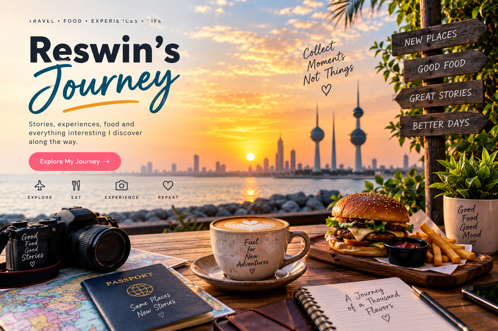
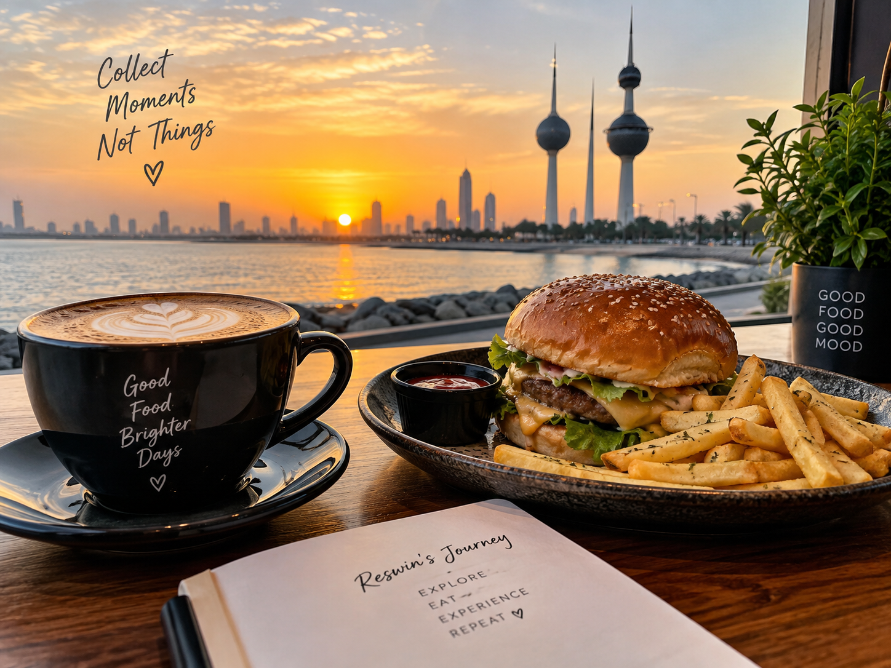

Experiences
My First Journey
September 8, 2026
A little introduction to my journey and why I started this blog.
Read More →Experiences, food, thoughts and everything I discover along the journey.

Experiences
September 8, 2026
A little introduction to my journey and why I started this blog.
Read More →Food
September 7, 2026
Exploring food, flavors and memorable places along the way.
Read More →
Everything
A personal reflection on leaving home, taking responsibility and learning to be thankful for an unexpected life away from home.
Read More →